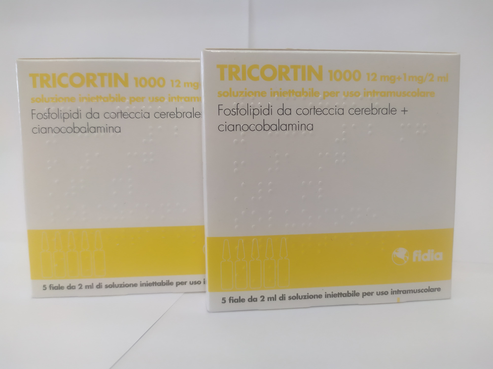

Контактна інформація:
Ціна: 750 грн/уп.
В наявності
Виробник: Італія
Ціна: 750 грн/уп.
В наявності
Саме в FarmItal ви можете купити ампули Трикортин,Tricortin в Україні, Гарантовано Якісний!
Доставка Tricortin здійснюється транспортними компаніями, терміни виконання замовлення обумовлюються менеджером Фармітал. Ви можете замовити Трикортин у містах: Одеса, Херсон, Чернігів, Сєверодонецьк, Бердянськ, Бровари, Дніпро, Вінниця, Київ, Слов'янськ, Полтава, Краматорськ, Біла Церква, Кам'янське, Маріуполь, Чернівці, Олександрія, Кам'янець-Подільський, Львів, Запоріжжя, Кропивницький, Житомир, Івано-Франківськ, Суми, Черкаси, Костянтинівка, Мелітополь, Кривий Ріг, Рівне, Луцьк, Нікополь, Павлоград, Ужгород, Кременчук, Лисичанськ, Хмельницький, Тернопіль, Харків, Миколаїв, а також в інших населених пунктах України.
Причина виникнення неврозів у порушенні психічної стабільності сучасної людини. Препарат Трикортин належить до групи ноотропів та дозволяє впоратися з неврозами різної етіології. При цьому Трикортин не впливає на функціональність інших органів та систем та не шкодить їх роботі. До складу Трікотрін 1000 входять фосфоліпіди, ціанокобаламін (вітамін В12) та додаткові ефіри. Такий компонентний склад здатний поновити порушені функції головного мозку. Парентеральне (внутрішньом'язове) введення фосфоліпідів з кори головного мозку свині (фосфоліпіди neuromologhi) здатне активувати метаболізм нейронів людини шляхом нормалізації ферментативної активності, збільшити оборот нейромедіаторів, а також покращити метаболізм глюкози та ендогенних фосфоліпідів. Ціанокобаламін (вітамін В12) має високу біологічну активність, бере участь не тільки у вуглеводному, білковому та ліпідному обміні, але також і в метаболізмі нервових клітин. Підвищує регенерацію тканин, нормалізує кровотворення, функції печінки та нервової системи. Фосфоліпіди парентерально відзначають подвійно метаболізм і стабільність, було вивчено та дано оцінку загальної радіоактивності в мозку, еволюції на клітинному рівні.
Вводиться по 2 мл внутрішньом'язово один раз на добу за вказівкою лікаря.Курс лікування: 15-20 днів.
Не було повідомлено про будь-які побічні ефекти, які можуть бути віднесені до цього препарату.
Зберігати у недоступному для дітей місці.Зберігати при температурі не вище 25 °C.